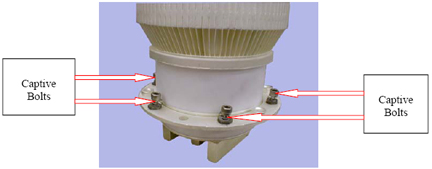

| NOTE: | After the ring bracket has been removed six access holes located around the perimeter of the tube will be visible in the tank circuit inductor. The tube-securing captive bolts will be loosened in the following step. The tube-securing captive bolts are shown in Illustration 11. |
Illustration 11: PA Tube Base Showing Captive Securing Bolts
